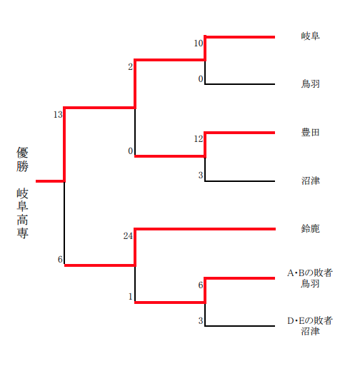

はじめに
 |
岐阜高専硬式野球部は, 下級生チーム(1-3年生)の高校野球と上級生チーム(4-5年生)の高専野球に分かれて活動します. 下級生チームは全国高等学校野球大会を, 上級生チームは全国高等専門学校野球大会を目指して練習しています. |
 |
|
【練習日程】
|
高校野球 第74回 秋季地区大会 (2021年8月12日-20日)
|
8月15日(日) 9:00 vs 岐南工業 at 岐阜ファミリーパーク 新型コロナウイルス感染拡大防止の観点から, 秋季地区大会も夏の大会同様の入場制限をさせていただきます. 入場者は部員, 部員家族, 学校関係者(在校生, 卒業生, 教職員)に限られ, 全員のお名前, 体温・体調, 連絡先を確認させていただく必要があります. 入場券は必要ありませんが, 受付の都合上, 試合開始予定時刻の30分前までに岐阜高専ベンチ側入場口にいる受付担当者に必要事項をお申し出ください (それ以降の来場につきましては対応できない場合がございます). また, 試合当日までの2週間分の行動歴(いつ, どこで, 誰と会ったか)を残しておいてください. ※事前に「観戦申込フォーム」にてお知らせいただけますと当日の受付がスムーズです. 大変ご不便, ご面倒をお掛けしますが, 安心安全な大会となるよう皆様のご協力をお願いいたします. |
高専野球 第59回 東海地区国立高等専門学校体育大会 (2021年7月17日-18日)
|
優勝しました！応援ありがとうございます. 詳細はこちら をご覧ください.  全国大会の日程・会場が変更されます. 詳細はこちら |
Twitterタイムライン
リンク
更新情報